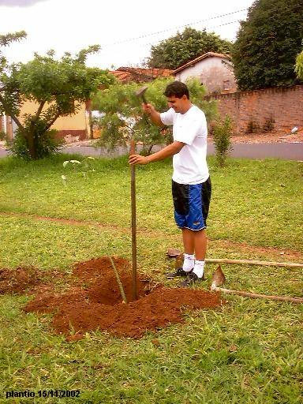
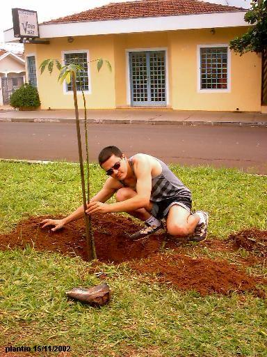
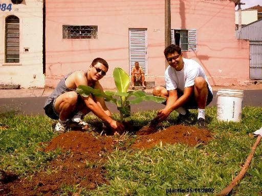
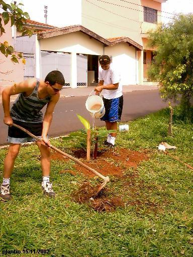

Neste dia,
plantamos 3 mudas no Quarteirão H
da Avenida Henrique Gregori:
- 1 Árvore Frutífera
- 1 Paineira
- 1 Bananeira |
Veja
as fotos:
|
Fabio, na
descontração, abre o aceiro para plantar a árvore |

|
Fabio e
Danilo, colocam a árvore dentro do aceiro |
|
Fabio
prega a estaca para proteger a muda |
|
Alexandre
e Fabio, abrindo o aceiro para plantar
a muda de Paineira |
|
Sr. Adão,
supervisionando o trabalho... |
 |
Fabio,
estaqueando a muda de Paineira |
|
Uma foto
que demonstra a mudança do local após os plantios |
|
Alexandre
retira uma muda de Unha de Vaca para plantá-la |
 |
Logo
depois, puxando a terra para dentro do aceiro |
|
Sr. Adão,
Danilo e Alexandre, plantando a Unha de Vaca |
|
A última
muda do dia: uma Bananeira |
 |
Com o
aceiro já aberto, Alexandre e Fabio plantam a Bananeira |
 |
Os
cuidados finais do plantio |
|
Após
terminado o plantio, os três amigos posam para uma foto
com os instrumentos de trabalho
|
|
Fabio, com
o "símbolo" do projeto |
|

|
|
E por fim,
a foto ilustra o resultado do trabalho: 20 novas mudas plantadas ! |
|